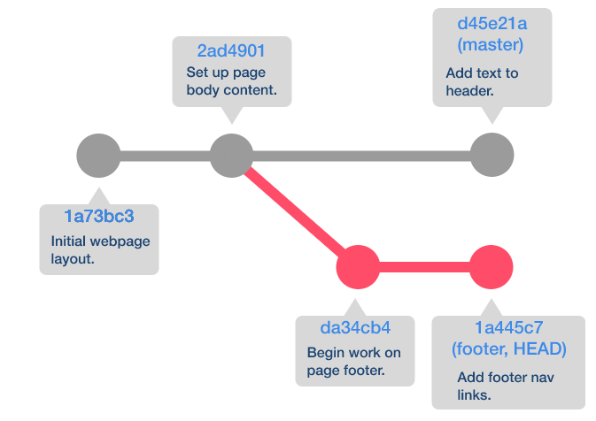
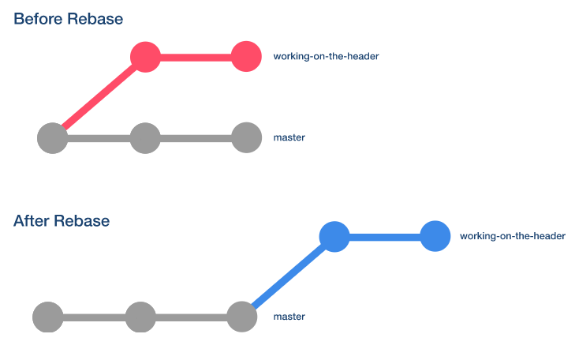

Chrome has great JavaScript developer tools that we will be using throughout the bootcamp
How to use the Repl: 1. Right click on any Chrome browser and click inspect 2. Click the Console tab on the interface that opens 3. Right any JS code in the console
NodeJS vs. Browser
NodeJS has…
Browser has…
- “global” object named global
- “global” object named window
- NodeJS-specific objects like process
- browser-specific objects like location and document
Working Directory - current uncommitted changes to your files
Staging Area - still uncommitted changes to your files but prepped for commit
Local Repository - the local git repository that holds all your committed versions
branch - a linear series of commit versions 
HEAD - last committed change to the branch you are currently on
master branch - first created branch when initializing a git repository
merge - can merge commits on one branch into another branch
Commands
git init - initializes a git repository in a folder - creates a hidden folder, .git, can be seen by using command, ls -a - DO NOT initialize a git repository on your Desktop or your root! - DO NOT have a nested git repository!! (a folder with a git repo in a folder with a git repo) - If you do any of the above, you can delete the hidden .git folder created with: rm -rf .git >> PLEASE MAKE SURE TO WRITE THIS OUT EXACTLY BEFORE PRESSING ENTER!!!! IF YOU DON’T DO IT EXACTLY, YOU MAY DELETE OTHER THINGS OR THE ENTIRE CONTENTS OF THE FOLDER!!!! THEY CANNOT BE RECOVERED
git status - checks if there is a git repository and the status of your git repository
git add {FOLDER/FILE PATH} - adds folder or file specified to your staging area from your working directory
git commit -m 'Write your commit message here...' - adds all items in your staging area to your local repository bundled as a new version or commit
git log - see your past commit history (past versions)
git log --oneline - shortened version of the above command
git diff - used to compare two versions, or points of time, in a git repository - without arguments, will display the difference between the working directory and the last committed version
git diff --staged - compare changes between staging area and last commited version
git diff {INSERT YOUR COMMIT HERE TO COMPARE} - compare changes between last commited version and the argument to git diff
git branch - will show all branches and what branches you are currently on
git checkout -b {insert-name-of-branch-here} - creates a new branch with the given name and checks it out
git checkout {branch-name} - checks out the branch given
git reset
used to rollback commits or group local commits into one large commit
Careful when using this! Make sure you know what will happen when you reset commits!
Soft Reset
git reset --soft {INSERT A COMMIT TO ROLLBACK TO HERE} - will rollback changes to the commit specified AND will add the changes in the commits rolled back to the STAGING AREA
Mixed Reset
git reset --mixed {INSERT A COMMIT TO ROLLBACK TO HERE} - will rollback changes to the commit specified AND will add the changes in the commits rolled back to the WORKING DIRECTORY - is the default reset (git reset INSERT A COMMIT TO ROLLBACK TO HERE} will do a mixed reset)
Hard Reset
git reset --hard {INSERT A COMMIT TO ROLLBACK TO HERE} - will rollback changes to the commit specified BUT will REMOVE all the changes in the commits rolled back - NO WAY TO GET ANY OF THE CHANGES BACK IN THE COMMITS REMOVED
Pull Requests (PR)
In a proper working dev environment, Pull Requests are made to compare branches with other branches before merging
You can add other developers to review your changes before merging onto another branch
git remote add {name-of-remote} {remote-url} - adds a remote repository with the given tag name for the url
git rebase
Careful when using this! Make sure you know what will happen when you rebase commits!
git rebase {BRANCH NAME or COMMIT HASH} - takes the HEAD of the branch name or the commit and uses it as the start point of the current branch
Git Rebase
If there is a rebase conflict:
git rebase --abort - only if there is a rebase conflict, this will abort the rebase
add the changes to the staging once you resolve the rebase conflicts in VSCode
git rebase --continue - run this after you add all the changes to staging to continue with the rebase (make sure to run git status to see if you still have conflicts after you continue)
make sure to see that the rebase was successful before continuing to work
git merge
git merge {other-branch} - will take the other branch’s commits and add it into teh current branch - If there is no merge conflict when running merging, then the new commits from the branch you are merging will be added to the master branch
After you resolve a merge conflict, it will create a new commit in your git history
If there is a merge conflict:
git merge --abort - only if there is a merge conflict, this will abort the merge
add the changes to the staging once you resolve the merge conflicts in VSCode
git merge --continue - run this after you add all the changes to staging to continue with the merge (make sure to run git status to see if you still have conflicts after you continue)
make sure to see that the merge was successful before continuing to work
git checkout
git checkout {BRANCH NAME or COMMIT HASH} - used to force the HEAD to be at the checked out branch or commit on a detached branch (Not recommended. Just checkout a new branch and reset the commits on the branch there.)
git checkout -- {FILE NAME} - used to reset the file specified to be the same as the HEAD’s version
Other Useful Commands
git config --global user.name {INSERT NAME HERE} - sets your global git user’s name and displays that for every git commit you make
git config --global user.email {INSERT EMAIL HERE} - sets your global git user’s email and displays that for every git commit you make
git push -u {REMOTE REPO TAG NAME} {BRANCH NAME} - sets the upstream for the branch to the remote repo and branch so your local git repo will track changes between itself and the remote repo (can see those changes with git status)
If you want VSCode to be the editor that opens when changing commit messages, do EDITOR="code --wait" in your terminal.
NodeJS Learning Objectives
Define NodeJS as distinct from browser based JavaScript runtimes.
Write a program that reads in a dictionary file using node’s FS API and reads a line of text from the terminal input. The program should ‘spell check’ by putting asterisks around every word that is NOT found in the dictionary.
Git Learning Objectives
Use Git to initialize a repo
Explain the difference between Git and GitHub
Given ‘adding to staging’, ‘committing’, and ‘pushing to remote’, match attributes that apply to each.
Use Git to clone an existing repo from GitHub
Use Git to push a local commit to a remote branch
Use git to make a branch, push it to github, and make a pull request on GitHub to merge it to master
Given a git merge conflict, resolve it
Match the three types of git reset with appropriate descriptions of the operation.
Use Git reset to rollback local-only commits.
Identify what the git rebase command does
Use git diff to compare a local ‘staging’ branch and ‘master’ branch.
Use git checkout to check out a specific commit by commit id